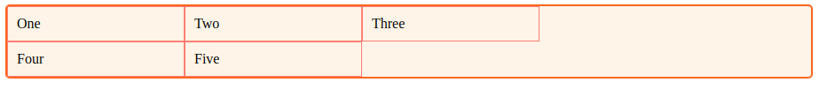
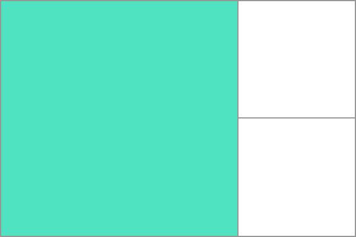

CSS Grid Layout
What is grid?
CSS Grid Layout introduces a two-dimensional grid system to CSS. Grids can be used to lay out major page areas or small user interface elements.
A grid is an intersecting set of horizontal and vertical lines – one set defining columns, and the other, rows.
The Grid container
We create a grid container by declaring
display: grid or display: inline-grid
on an element.
One
Two
Three
Four
Five
Let's make the .wrapper a grid container.
.wrapper {
display: grid;
}
Grid Tracks
A grid track is the space between any two lines on the grid.
We define rows and columns on our grid with the grid-template-columns
and grid-template-rows properties.
.wrapper {
display: grid;
grid-template-columns: 200px 200px 200px;
}

The Fr Unit
Grid introduces an additional length unit to help us create flexible grid tracks.
The new fr unit represents a fraction of the available space in the grid container.
.wrapper {
display: grid;
grid-template-columns: 1fr 1fr 1fr;
}
.wrapper {
display: grid;
grid-template-columns: 2fr 1fr 1fr;
}
Track listings with repeat() notation
Large grids with many tracks can use the repeat() notation, to repeat all or a section of the track listing.
For example the grid definition:
.wrapper {
display: grid;
grid-template-columns: 1fr 1fr 1fr;
}
Can also be written as:
.wrapper {
display: grid;
grid-template-columns: repeat(3, 1fr);
}
In next example, grid will consist of 10 tracks, a 1fr track, and then followed by a 2fr track. This pattern will be repeated five times.
.wrapper {
display: grid;
grid-template-columns: repeat(5, 1fr, 2fr);
}
The implicit and explicit grid
The explicit grid consists of any rows and columns defined with grid-template-columns
or grid-template-rows.
If you place something outside of the defined grid—or due to the amount of content, more grid tracks are needed—then the grid creates rows and columns in the implicit grid.
In the implicit grid tracks can be auto-sized by default, resulting in their size being based on the content that is inside them.
But you can also define a set size for these tracks with the grid-auto-rows and grid-auto-columns properties.
.wrapper {
display: grid;
grid-template-columns: repeat(3, 1fr);
grid-auto-rows: 200px;
}
Grid Lines
When we define a grid we define the grid tracks, not the lines. Grid then gives us numbered lines to use when positioning items.

Positioning items against lines
In the following example we are placing the first two items on our three column track grid,
using the grid-column-start, grid-column-end,
grid-row-start and grid-row-end properties.
One
Two
Three
Four
Five
.box1 {
grid-column-start: 1;
grid-column-end: 4;
grid-row-start: 1;
grid-row-end: 3;
}
.box2 {
grid-column-start: 1;
grid-row-start: 3;
grid-row-end: 5;
}
Grid cells
A grid cell is the smallest unit on a grid.

Grid areas
Items can span one or more cells both by row or by column, and this creates a grid area.
Gutters
Gutters or alleys between grid cells can be created using the column-gap and row-gap properties.
In the example, I am creating a 10-pixel gap between columns and a 15-pixel gap between rows.
.wrapper {
display: grid;
grid-template-columns: repeat(3, 1fr);
column-gap: 10px;
row-gap: 15px;
}
Nesting grids
A grid item can become a grid container.
In the next example, we have the three-column grid, with two positioned items. The first item has some sub-items.
a
b
c
Two
Three
Four
Five
If I set box1 to display: grid
I can give it a track definition and it too will become a grid.
.box1 {
grid-column-start: 1;
grid-column-end: 4;
grid-row-start: 1;
grid-row-end: 3;
display: grid;
grid-template-columns: repeat(3, 1fr);
}